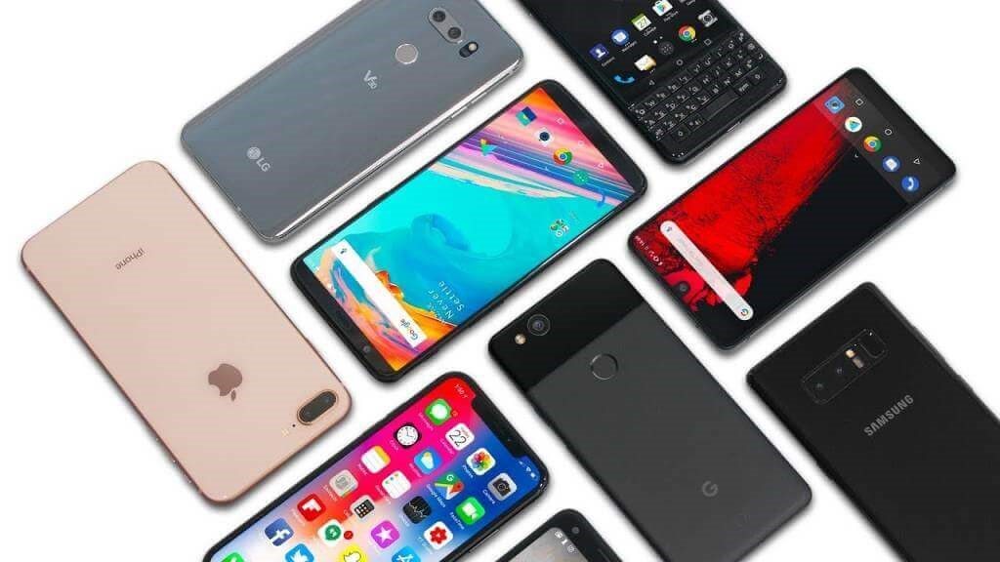

El teléfono celular y algunas marcas

Los teléfonos celulares son así llamados básicamente porque el área física que cubren tiene un formato de células. El origen del teléfono celular se dice que fue allá por el año 1973 cuando la compañía de electrónica de consumo masivo Motorola lanzó al mercado el primer teléfono celular portátil, que fue comercializado con el nombre de Motorola DynaTac 8000X. Actualmente, el número de modelos de teléfonos celulares que ingresan al mercado es prácticamente incalculable, y sus ventas generan cientos de miles de millones de dólares al año, convirtiéndolos en el dispositivo electrónico más usado en el mundo. Como podemos observar en cualquier ciudad o pueblo, es casi imposible encontrar una persona sin un celular o Smartphone en la mano, tal es el grado de penetración que este aparato ha tenido entre nosotros, y no es para menos, ya que gracias a las tareas que es capaz de cumplir, y a la cantidad de importantes funciones que incorpora, podemos mejorar nuestro estilo de vida, aumentando nuestra productividad y acortando los tiempos.
Esta ultimas década ha visto nacer al Smartphone tal como hoy lo conocemos, mezcla de computadora y teléfono celular, ofrece características con las cuales ni siquiera podíamos soñar en los tiempos del Nokia 3210, por ejemplo. Los teléfonos celulares poseen una gran variedad de funciones. Para mencionar algunas, dependiendo de cada tipo de teléfono celular: administra una agenda de compromisos actualizada, envía y recibe e-mails, envía y recibos mensajes de texto, mensajería instantánea a través de internet, integración con redes sociales, navega por sitios de internet, reproducen audio MP3 y otros formatos, reproducen video y TV on-line, servicio de GPS y mapas, integración con otros dispositivos como receptor de GPS funciones. Los teléfonos celulares, al operar en frecuencia de radio, innovaron para minimizar la disponibilidad del espectro RF. Ahora, varias antenas torres para teléfonos celulares son usadas para cubrir una gran área geográfica. Cada torre (estación base) cubre un área circular llamada célula. Una gran región geográfica es dividida en un número de células, permitiendo que las estaciones bases diferentes usen los mismos canales/frecuencias para realizar la comunicación. Otro aspecto importante de esta división en células, es que los teléfonos celulares necesitan menos energía para transmitir y alcanzar cualquier estación base que cubre un área más pequeña. Reduciendo la energía necesaria para la transmisión, se reduce el tamaño de la batería y consecuentemente el peso.
Esto contribuye a la reducción de tamaño de los teléfonos celulares que no sería posible sin la tecnología celular. Cuando usted usa su teléfono celular, primero el teléfono localiza la estación base con la señal más fuerte y solicita un canal. La estación base permite el acceso al canal y la llamada es entonces aceptada. La llamada es entonces enviada a la red del teléfono local, si es que la llamada es para un teléfono común, de lo contrario será transmitida por la red móvil. Esta plataforma funciona utilizando ondas de radio, las cuales le permiten realizar las operaciones para establecer comunicación desde el teléfono celular a la base que retrasmite la comunicación. De esta manera, es posible entablar diferentes modalidades de comunicación, desde una charla convencional a través de una llamada, pasando por el envío y recepción de mensaje de texto, hasta las más modernas funcionalidades que nos permiten estar conectados siempre.